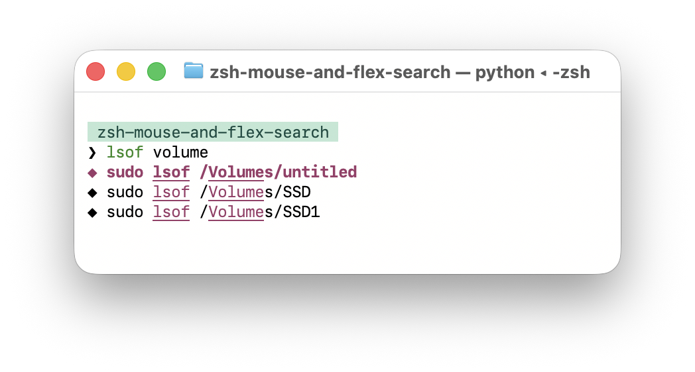
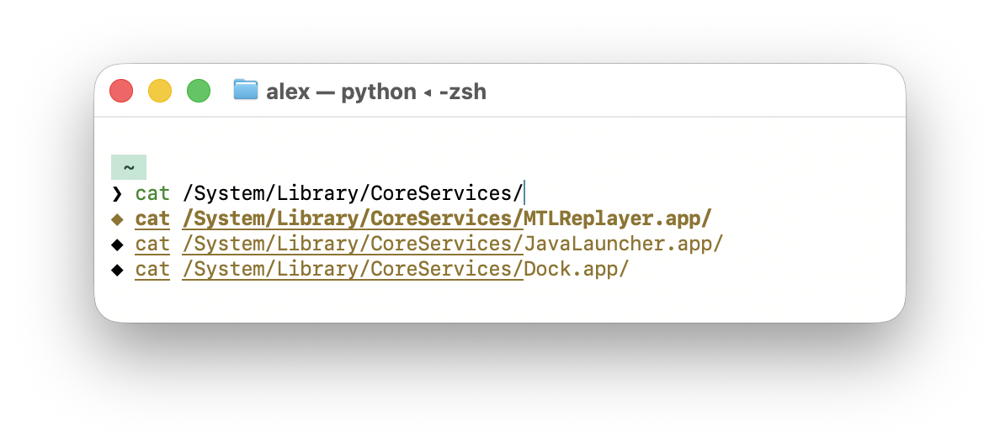
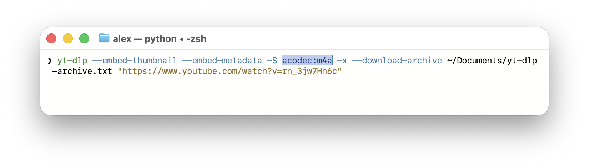
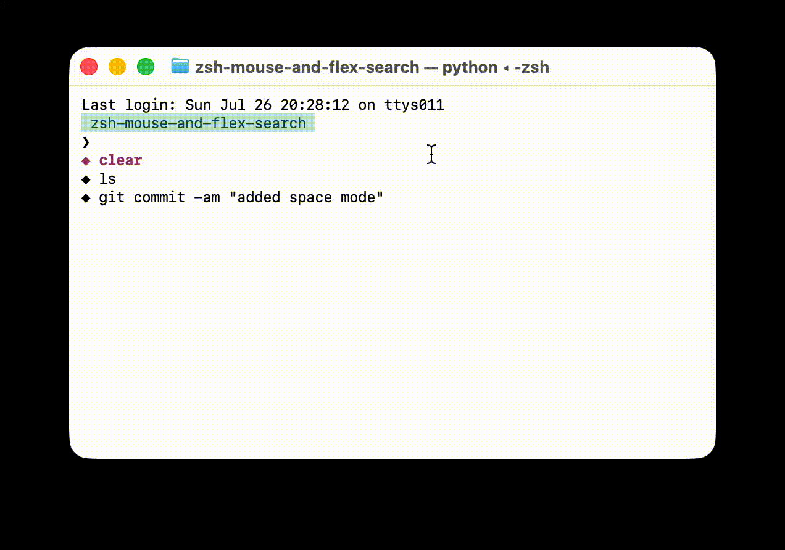

Improving terminal ergonomics
Most commands are repeated. We need a way to get autosuggestions. Ghost-style zsh-autosuggestions works, but it relies on exact prefix matches. Atuin can show history on Ctrl-R. A small Python TUI attached to Zsh hooks can bring that search into the command line as you type.
Each TUI is an interface to one shared daemon. The daemon keeps history in memory and serves search responses over a local socket, so each prompt can query the same process.
The search is fuzzy. It keeps the useful parts of history visible even when the command starts somewhere in the middle of what you remember.

Only 3 lines are displayed for brevity. Each history result has one of two characters:
- ◆ for a successful command.
- ◇ for a failed command.
The app uses SQLite for history. I found that Zsh does not store history as UTF-8, so we can avoid mangling any Chinese characters while using SQLite.
The ranking also uses context. Commands run in the current directory come first. Commands with the typed prefix follow. The remaining fuzzy matches come after them.
What about runtime completions? The TUI can detect a path in the current command, inspect that directory, and show matching files and folders in a different color.

Syntax highlighting is included, so commands are easier to scan before they run.
Terminal input has carried mouse events for years. A command line should use them. The app lets you click into a command, move the cursor, and overwrite text without any option clicks.

So far, this CLI has had no commands by design. The space key is easy to reach. Set ZSH_FLEX_HISTORY_EMPTY_SPACE_COMMAND to any command, then press Space on an empty input to launch it immediately. Helix is shown here.
